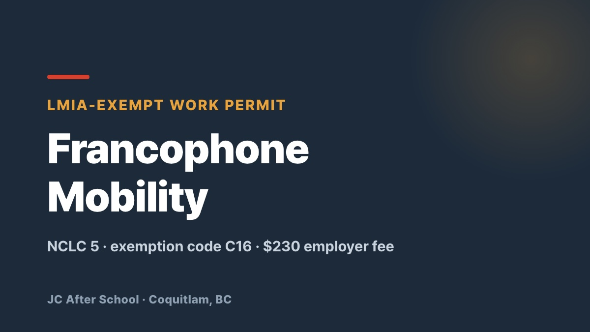

Canada's LMIA Is Blocked — French Gets You Past It 🇨🇦

Hello from JC After School — your partner for settling and building a life in Canada.
You have probably heard that getting a Canadian work permit has become extremely difficult. Employer-sponsored LMIA approvals are slower and stricter than ever, and refusal rates have climbed. A lot of people are putting their Canadian plans on hold because of it.
But there is a program that lets you skip the LMIA entirely — not with English, but with French.
Here is the essential guide to Francophone Mobility, currently the most talked-about route into Canada.
💡 What is Francophone Mobility?
It is an LMIA-exempt work permit created by the federal government to grow French-speaking communities outside Quebec — in BC, Ontario, Alberta and the rest of the country.
✨ Why French is a weapon right now
1. Zero LMIA burden for your employer (and you can still work in English)
Normally an employer must spend months and a significant amount of money obtaining a Labour Market Impact Assessment before hiring a foreign worker. Under Francophone Mobility that requirement disappears. The employer pays a $230 CAD compliance fee and can hire you directly.
This is the part people most often get wrong: you do not need to work in French. Your job can be entirely in English. You only need to demonstrate that you personally can speak French.
2. A much lower bar — NCLC 5
Since the 2023 revision, you only need NCLC 5 in speaking and listening (an intermediate level) on an approved French test such as TEF or TCF. It is no longer limited to professional occupations — nearly every occupation qualifies, with primary agriculture the one exception.
3. A fast lane to permanent residence
Once you are in Canada and building experience, French-speaker category-based draws let you receive an invitation to apply for PR at a dramatically lower CRS cut-off than general English-track candidates.
🛠️ Only three conditions to remember
📋 The requirements in detail — official IRCC criteria
The rules were substantially relaxed on June 15, 2023 and remain in force. They split into applicant requirements and employer requirements.
1. Who can apply
You must meet all four of the following.
2. What the employer must do first — the LMIA exemption steps
Before you can submit your work permit application, your Canadian employer has to complete these steps in the IRCC system.
💡 In one sentence
Get a job offer outside Quebec in any occupation except primary agriculture, have your employer register it in the portal for $230, and prove NCLC 5 or higher in French speaking and listening — and you get a work permit without an LMIA.
🎯 Who this is strongly recommended for
As the official IRCC page makes clear, the Canadian government is holding this door wide open for French speakers. Doors like this do not stay open forever — this is the moment to start French.
📚 Official references
📌 IRCC — Francophone Mobility Work Permit
Eligibility, LMIA exemption code C16, and fees ($155 applicant + $230 employer).
📌 IRCC — Francophone Mobility · How to apply
Evidence standards for NCLC 5 (speaking and listening) and the online submission process.
📞 Could Francophone Mobility work for me?
From matching your occupation to mapping out a realistic timeline for your French score, you do not have to work this out alone. JC After School builds the strategy with you, one-on-one.
📞 Phone: 778-258-2223
💬 KakaoTalk: Open chat
📍 Location: #130 – 1140 Austin Ave, Coquitlam, BC
※ This article is based on current IRCC guidelines. Program rules can change — always confirm against the official pages linked above.